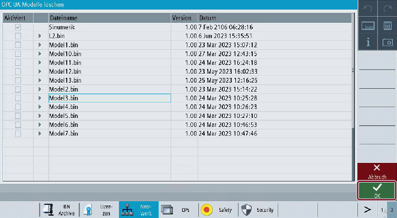

Vorgehensweise
-
Um ein kundenspezifisches Objektmodell zu löschen, drücken Sie den Softkey "Modell löschen".

Softkey "Modell löschen"
-
Wählen Sie in der angezeigten Liste das zu löschende Modell aus und drücken Sie den Softkey "OK".
OPC UA-Modelle löschen
-
Es wird eine Popup-Meldung angezeigt, in der Sie den Löschvorgang bestätigen müssen:
Popup-Meldung "Modell löschen"
Drücken Sie den Softkey "OK", um das Modell zu löschen.
Wenn Sie den Softkey "Abbruch" drücken, kehren Sie zum Bildschirm "OPC UA-Modelle" zurück.